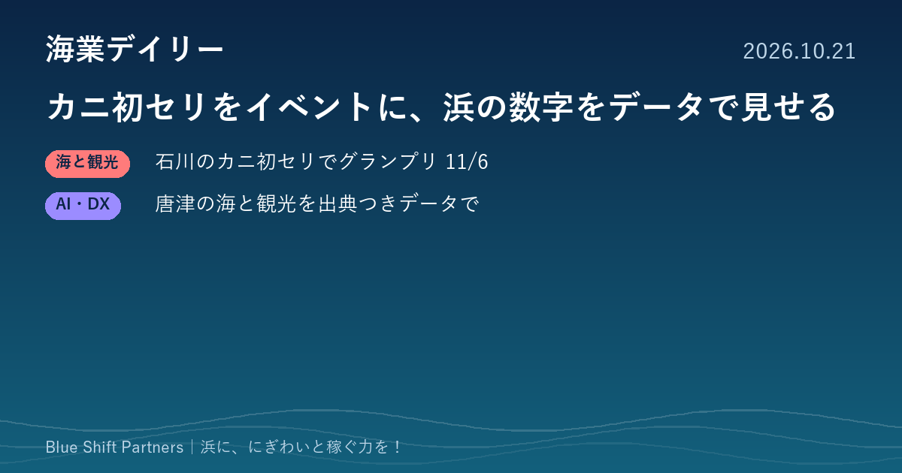

2026.10.21
カニ初セリをイベントに、浜の数字をデータで見せる

本日は、石川県漁協が解禁日の初セリに合わせて開く「蟹-1・姫-1グランプリ」と、唐津のNPO法人が始めた出典つきの地域データ公開の2件を取り上げます。水揚げの瞬間や浜の数字を、外の人に伝わる形にする取り組みです。
石川県漁協、11月6日のカニ初セリで「蟹-1・姫-1グランプリ」 今年から両会場で1杯に
石川県漁業協同組合は、ズワイガニ漁の解禁に合わせた初セリで「蟹-1グランプリ」「姫-1グランプリ」を11月6日（金）に開くと発表しました。会場はかなざわ総合市場（金沢市）と加賀支所（加賀市）で、これまで会場ごとに選んでいたグランプリを、今年から両会場で最も高値が付いた1杯に一本化します。主催は同漁協を中心とするおいしかわ県PR協議会で、PRブースの設置や、落札額上位10名の船名と金額のポータルサイトでの公表も予定しています。天候で出漁できない場合は日程が変わる可能性があります。
ここがポイント：初セリという日常の取引を、ランキングや企業との協賛で話題に変える手法です。自分たちの浜の「旬の初日」を発信の柱にしたい漁協や自治体にとって、組み立て方の参考になります。
出典：石川県漁業協同組合（PR TIMES）「蟹-1・姫-1グランプリ」開催のお知らせ（2026-10-20）
唐津のNPO法人が「Karatsu Data Bank」を公開 水揚げや観光など11本のデータを出典つきで
特定非営利活動法人唐津Farm&Food（佐賀県唐津市）は、地域の海と自然に関するデータをまとめた「Karatsu Data Bank（唐津データバンク）」を10月12日に自法人のサイトで公開しました。10月18日時点で、玄海の水揚げと水温、海ごみ、観光、人口と移住など11本のページがあります。各ページに出典台帳を置き、資料名・発行元・URL・取得日を記載し、一次資料で確認できない数値は載せない方針です。下書きをAIが作り、別のAIが一次資料と照合したうえで法人が公開を判断する体制をとり、毎月更新するとしています。
ここがポイント：海業の計画づくりや補助金申請では、水揚げや観光の数字を出典つきで示すことが求められます。AIで作業を省きつつ一次資料での確認を仕組みにした例として、協議会や自治体のデータ整備の参考になります。
出典：特定非営利活動法人唐津Farm&Food（PR TIMES）「Karatsu Data Bank」公開のお知らせ（2026-10-18）
カニの初セリも、浜の統計も、そのままでは外の人に届きません。「いつ・何が・どれだけ」を一目で伝わる形にすると、来訪や連携のきっかけになります。まずは自分たちの浜の自慢の数字をひとつ、出典つきで言えるようにしておくことをおすすめします。